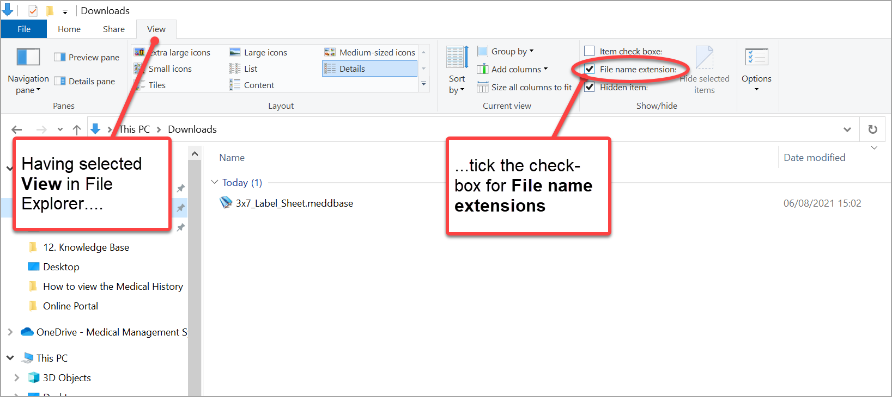
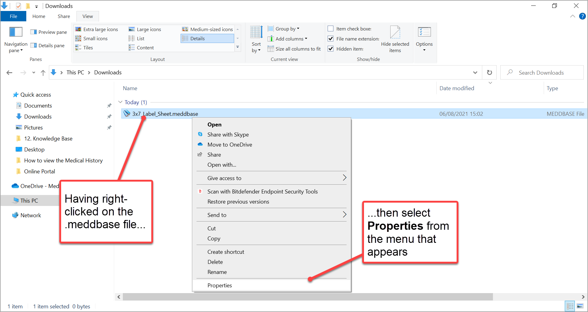
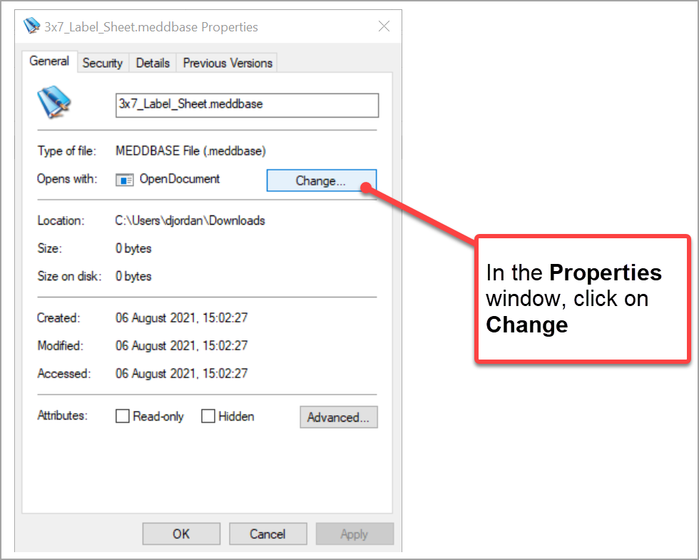
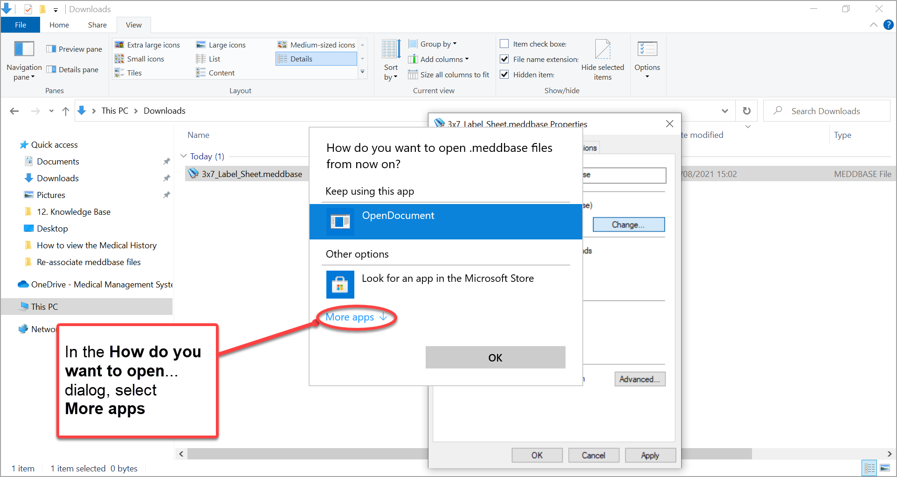
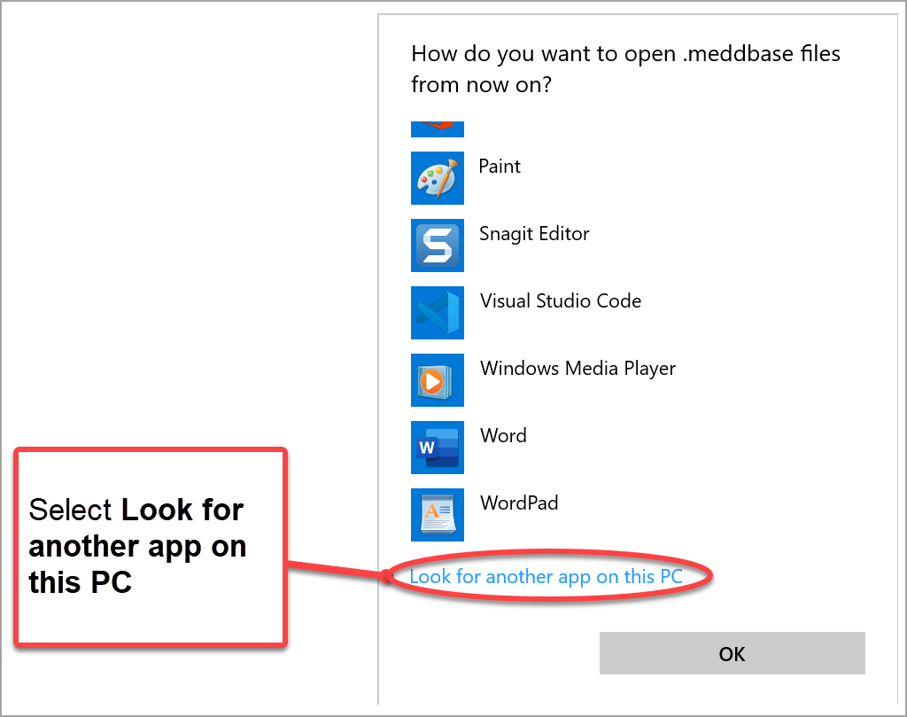
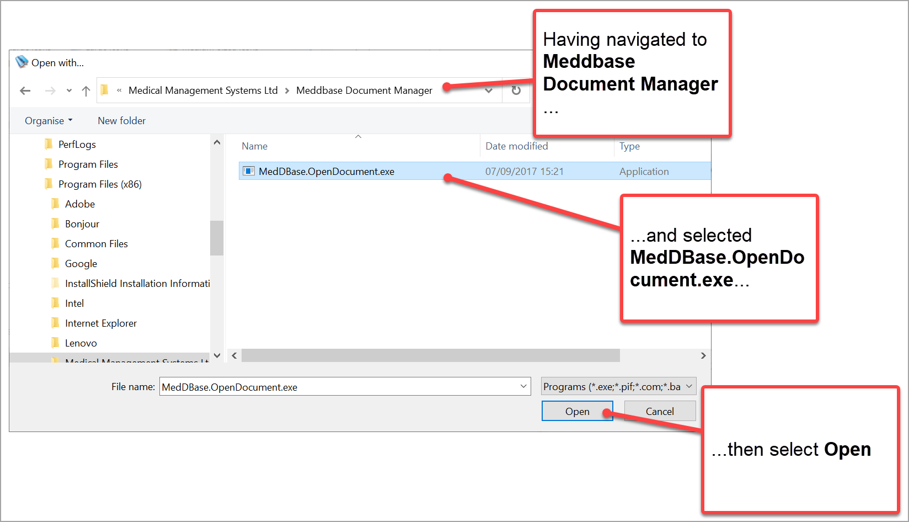
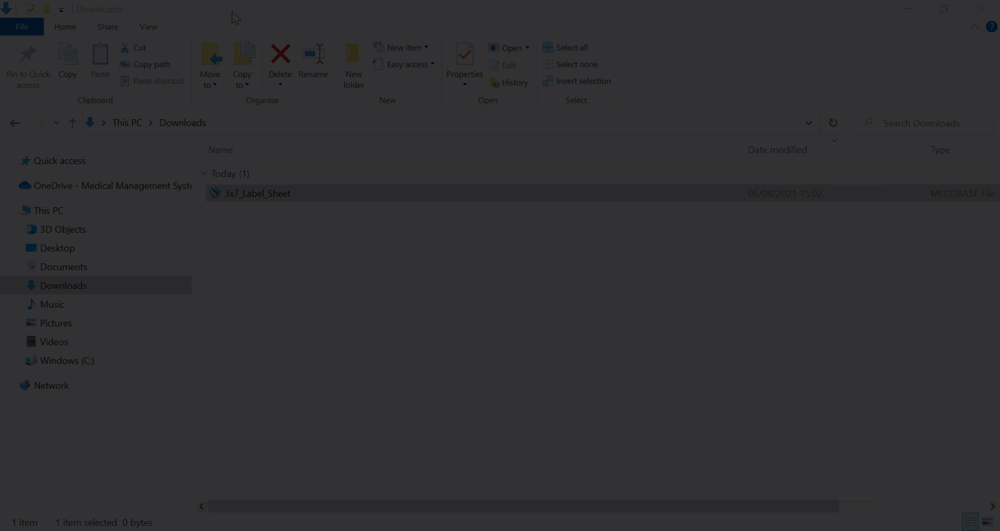

There can be issues related to downloaded Meddbase files that are opening in another program that has been incorrectly configured with this set file type.
This article:
This document is for Windows users only.
To do this:
1. Check that you have successfully installed the Document Manager program.
For further guidance on the installation, please see: The Document Manager
2. Enable File name extensions if not already done so.

3. Navigate to the folder containing the .meddbase file and right-click on the .meddbase file
4. From the menu that appears, select Properties 
5. In the ...Properties window now displayed, click on Change

6. In the dialogue How do you want to open .meddbase files... select More Apps

7. In the extended How do you want to open .meddbase files... dialog now displayed

8. In the Open with... window that appears

9. Click on OK in the Properties dialogue
The .meddbase file type is re-associated with the Document Manager.
If you are having further issues with Document Manager it would be good to check this support article on the configuration of document manager: Installing and setting up the Document Manager
Want to see how it's done?
This short video below shows how to re-associate meddbase files with the Meddbase Document Manager.
